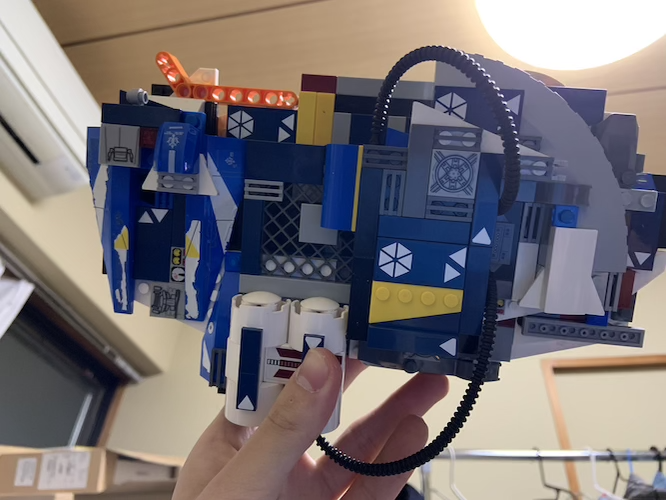

クロステックデザイン演習III
 MESHを使った変身ベルト
この日はいつもと違うテーブルで授業を受けたのだが、案出しの際に他の班員から全くといっていいほど意見が出なくて狼狽えた。
結果的に独走状態になってしまった節がある。
ダメだと思い班員に話しかけ意見を乞うたり促したりしたが黙られるのでどうすればよかったのかわからない。
コンセプトは「怪人を倒す程の武力なんだから勝手にポンポン返信されては困る。システムを管理している人に通知などがいって然るべき」という発想。
SNS等によくあるログイン通知を参考に文章を作った。
変身は
- MESHアプリを起動したスマホを本体に挿す
- ベルトにマウントされているボタンMESHを押す
システムとしては
- 明るさセンサーでスマホを挿したことを検出
- スマホが刺された状態でボタンを押すことで変身音がなる
- 変身時に光る
- 変身完了後にLINEへ通知が行く
3Dプリンターを使わずレゴで済ませた理由には
- 既に自分は何度か使った事があった
- 班員がほぼ何もしておらず自分任せだった
- レゴの方がスピーディに試作でき、分解や再構築が楽だった